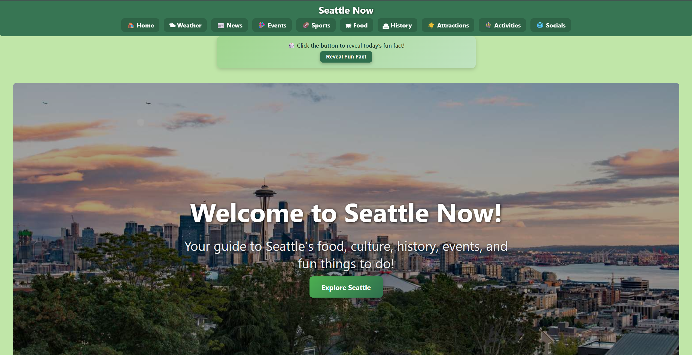
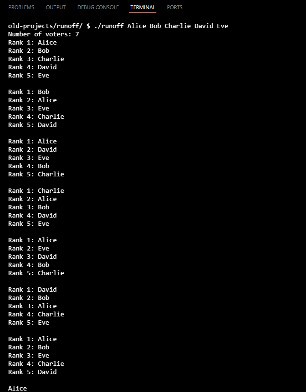
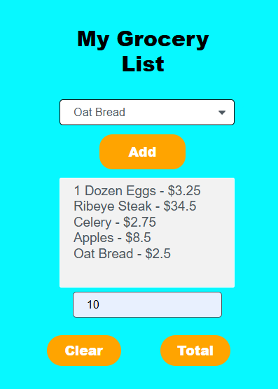

High School Senior • Rising Computer Science Student
I build full-stack applications, APIs, and interactive software systems that solve real-world problems - and this is my portfolio.
I’m a high school senior interested in computer science, with a focus on building practical software and exploring areas such as AI, cybersecurity, and full-stack development. I enjoy turning ideas into working systems, from web applications using real APIs to lower-level programs that strengthen my understanding of algorithms and problem-solving. Most of my learning comes from hands-on building, debugging, and iterating on projects to improve them over time. I’m currently preparing for a Computer Science degree and looking for opportunities to grow in real-world environments where I can learn from experienced engineers and contribute meaningfully. My goal is to become a well-rounded software engineer who understands both system design and how to build reliable, user-focused applications.

Full-stack platform that aggregates weather, news, sports, and events using multiple APIs. Designed for real-time data interaction and dynamic UI updates.
Skills: Flask • APIs • JSON • UI Design • Full-stack architecture
View Live → GitHub →Low-level image processing program implementing grayscale, blur, and sepia filters using C.
Skills: C • Memory • Pointers • Structs • Image Processing
GitHub →
Ranked-choice voting simulator using elimination logic and structured algorithm design.
Skills: Algorithms • Logic Design • Arrays • Simulation Systems
GitHub →
Interactive JavaScript shopping system with cart logic, tax calculation, and receipt generation.
Skills: JavaScript • DOM • Events • State Management
GitHub →📧 Email: taran.ubbi@gmail.com
💻 GitHub: github.com/TaranUbbi
🌐 Website: seattlenow.net